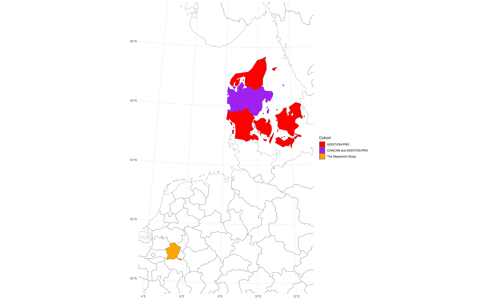
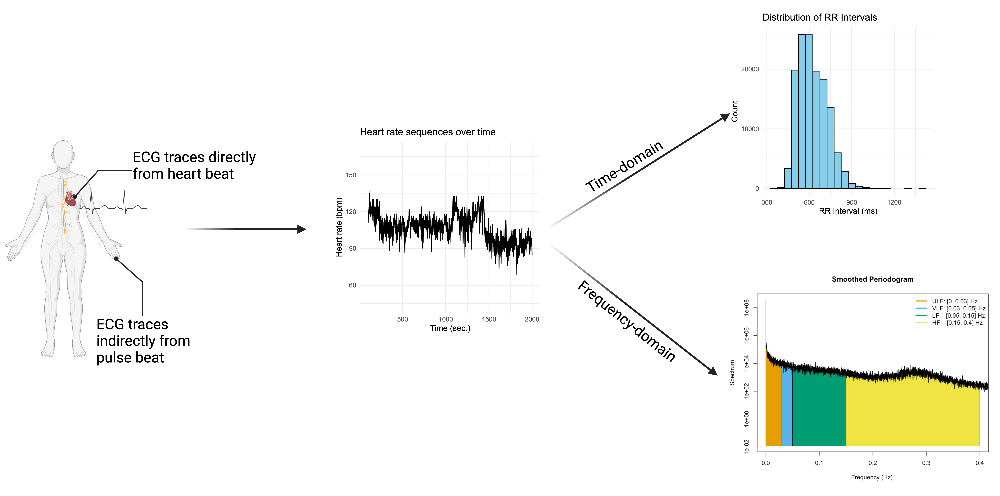
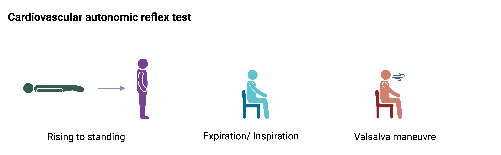

4 Materials and methods
4.1 Overview of the studies
| Study I | Study II | Study III | |
|---|---|---|---|
| Title | Cardiovascular autonomic dysfunction is linked with arterial stiffness across glucose metabolism: The Maastricht Study | Cardiovascular autonomic dysfunction precedes cardiovascular disease and all-cause mortality: 11-year follow-up in the ADDITION-PRO study | Cardiovascular autonomic neuropathy and subclinical heart failure in type 2 diabetes: The CANCAN study |
| Design | Aetiological cross-sectional study | Aetiological prospective cohort study | Descriptive cross-sectional study |
| Cohort | Maastricht study | ADDITION-PRO | CANCAN |
| Study population | 3673 people with normal glucose metabolism, prediabetes, and type 2 diabetes | 2082 people with high risk of diabetes | 173 patients with type 2 diabetes visiting outpatients clinics |
| Data sources | Population-based cohort from The Maastricht Study in the Netherlands | Cohort study of selected people based on having high risk of diabetes | Clinical cohort study |
| Determinant | 24-hour HRV | Week-long and hourly HRV | Cardiovascular autonomic reflex test |
| Primary outcome | Arterial stiffness | Major adverse cardiovascular events, heart failure, and all-cause mortality | NT-proBNP |
| Statistical analysis | Linear regression | Poisson regression | Logistic regression |
| Missing data | Complete case analysis | Multiple imputation of chained equations for confounders | Multiple imputation of chained equations for CART and confounders |
4.1.1 Study population

4.1.1.1 Study I - The Maastricht Study
The Maastricht Study is a prospective observational population-based study of the general population in the southern part of the Netherlands. The study emphasized the recruitment of people with type 2 diabetes, through the regional Diabetes Patient Registry, to extensively phenotype individuals with type 2 diabetes and those in intermediate stages of the disease. The eligibility criteria included an age range of 40–70 years. Participants were recruited through mass media campaigns and mailings from municipal registries (Gemeentelijke Basis Administratie; GBA). In the analysis of Study I, the study among 7449 population included participants with measurements of 24-hour HRV and at least one measure of arterial stiffness (carotid-femoral pulse wave velocity or carotid artery distensibility), both of which were completed within a three-month period between November 2010 and December 2020. The study has been approved by the institutional medical ethics committee (NL31329.068.10) and the Minister of Health, Welfare and Sports of the Netherlands (Permit 131088-105234-PG). All participants gave written informed consent.
4.1.1.2 Study II - ADDITION-PRO
The ADDITION-PRO study is a prospective population-based cohort nested within the Danish arm of the ADDITION-Europe study, originally designed as a stepwise screening program for type 2 diabetes in general practice. ADDITION-PRO aims to investigate early markers of cardiovascular disease (CVD) and metabolic dysfunction in individuals in different tiers of diabetes risk.
The ADDITION-Europe screening program identified a large number of individuals with impaired fasting glucose (IFG), impaired glucose tolerance (IGT), and normoglycemia despite having risk factors for diabetes and CVD. Participants for ADDITION-PRO were recruited from the original ADDITION-DK screening cohort, which included individuals from 190 general practices across Denmark. The recruitment strategy focused on individuals at high risk of diabetes withou type 2 diabetes, identified through a stepwise screening program that incorporated the Danish diabetes risk score from the Inter99. This assessment, conducted between 2001 and 2006, considered factors such as age, sex, history of gestational diabetes, family history of diabetes, known hypertension, BMI, and physical activity. High risk individuals was further screen for type 2 diabetes by blood measurement including HbA1c, random blood glucose, FPG, and OGTT, were identified patients were invited to the ADDITION-trail. High risk individuals without type 2 diabetes was further considered in a sampling fram for ADDITION-PRO.
Between 2009 and 2011, a follow-up health examination was conducted at four ADDITION-DK study centers to establish a longitudinal cohort. Eligible participants were those still alive, residing near the research centers (Steno Diabetes Center Copenhagen, Aarhus University Hospital, Holstebro Hospital, and the Hospital of South West Jutland, Esbjerg), and who had not withdrawn consent. Eligibility criteria included individuals aged 40–70 years who had previously undergone diabetes screening in ADDITION-DK. Exclusion criteria included pregnancy, psychological or psychiatric disorder preventing informed consent, and life-limiting conditions. One key feature of the data collection was the precise measurement of physical activity and energy expenditure using ActiHeart, which recorded acceleration and heart rate over a week. We included participants with a least 48-hour recording for our first analysis, and then include those participants with hourly measures of physical acceleration during the hourly HRV recording for th second analysis. We also excluded participant with prior CVD ten years before inclusion.
The population were disease history and follow-up in the unique register system of Denmark, which allows linkage of health records using the personal Civil Registration Number assigned to all citizens. The following national registries were accessed to collect information on incident CVD and mortality, medication use, and healthcare utilization: the National Patient Registry (hospital admissions and outpatient contacts), the National Health Service Registry (general practice visits), the Medical Prescription Registry, the Diabetes Registry, and the Cause of Death Registry.
4.1.1.3 Study III - CANCAN
The CANCAN Study was an observational pilot study conducted at two hospital outpatient clinics in Viborg Regional Hospital and Regional Hospital Gødstrup. It aimed to implement a screening protocol for identifying high-risk individuals using CAN assessments, continuous glucose monitoring, and heart failure indicators. All measures were part of routine clinical care for type 2 diabetes in Central Denmark. We included 200 adults (>18 years) with type 2 diabetes for over one year. Exclusion criteria were recent laser-treated eye disease (≤3 months), pregnancy, lactation, life-threatening illness, or cognitive impairment preventing consent. Participants were identified via electronic records and informed about the study by their doctor during telephone call. Those interested attended a dedicated meeting before their annual diabetes exam, where study details were discussed. Recruitment took place from 2021 to 2024. In study III, participants without a valid NT-proBNP measurement were excluded.
4.2 Study variables
4.2.1 Measures for cardiovascular autonomic dysfunction/ neuropathy
Heart rate variability

In study I-III a device was used to capturing the distance between each heartbeat defined as RR intervals from electrocardiogram traces either directly from heart-beat traces or indirectly from pulse traces. From this a sequence of successive heart beat intervals is extracted to calculate HRV. The pool of hearbeat data, we extrapolated time-domain and frequency-domain HRV indices. In study III, we used the ratio in pulse rate in test under different conditions lying-to-stading, in- expiration, and valsalva maneuvre.
Time-domain indices
Time-domain measures of HRV are based on the statistical distribution of normal-to-normal (NN) intervals. These include the standard deviation (SD) of NN intervals, the variation in successive NN intervals, and the proportion of successive intervals that differ by more than 50 ms. Description of time-domain indices are summarized in box 1.
| Time-domain HRV | Description |
|---|---|
| Standard deviation of NN heart beat intervals (SDNN, in ms) | Reflects overall HRV and total autonomic nervous system activity over the recording period. |
| SD of the averages of NN intervals in 5-minute segments throughout the recording (SDANN, in ms) | Measures long-term HRV variations, primarily reflecting circadian and autonomic fluctuations. |
| Mean of the SDs of all NN intervals for all 5-minute segments (SDNN index, in ms) | Estimates short-term HRV fluctuations and vagal tone by averaging segmental variations. |
| NN50 count divided by the total number of all NN intervals (pNN50, percentage) | Represents the proportion of successive NN intervals differing by more than 50 ms, indicating vagal activity. |
| Square root of the mean of the sum of squares of differences between adjacent NN intervals (RMSSD, in ms) | Reflects short-term HRV, mainly parasympathetic (vagal) activity. |
Frequency-domain indices
Frequency-domain HRV indices are derived from sequences of NN intervals transformed into the spectral domain using Fourier transformation. These indices quantify heart rate oscillations over different timescales. Short-term variations, such as respiratory sinus arrhythmia, reflect rapid autonomic changes, while longer oscillations capture autonomic responses to posture changes, circadian rhythms, or other physiological processes. Description of frequency-domain indices are summarized in box 2.
| Frequency domain HRV | Description |
|---|---|
| Variance of all NN intervals ≤ 0.4 Hz, total power (TP, in ms²) | Represents overall HRV, reflecting both short- and long-term autonomic regulation. |
| Ultralow-frequency range (ULF, in ms² ≤ 0.003 Hz) | Captures very long-term oscillations, influenced by circadian rhythms, metabolism, and thermoregulation. |
| Very-low-frequency range (VLF, in ms²; 0.003–0.04 Hz) | Associated with sympathetic activity, inflammation, and hormonal regulation. |
| Low-frequency range (LF, in ms²; 0.04–0.15 Hz) | Reflects a mix of sympathetic and parasympathetic activity, often linked to blood pressure regulation and baroreflex sensitivity. |
| High-frequency range (HF, in ms²; 0.15–0.4 Hz) | Represents parasympathetic (vagal) modulation of heart rate, closely related to respiratory sinus arrhythmia. |
Holter recordings in study I
All ECG recordings were obtained using a 12-lead Holter system (Fysiologic ECG Services, Amsterdam, the Netherlands) over 24 hours, as previously described. Participants were instructed to follow their regular daily activities but avoid showering during the recording. The ECG data were processed using proprietary Holter Analysis Software (Fysiologic ECG Services), where artefacts and ectopic beats were excluded through automated processing and manual validation. A minimum recording duration of 18 hours was required for further analysis. Inter-beat intervals between consecutive sinus beats were provided in milliseconds (ms). Time-domain HRV indices were calculated, including SDNN, SDANN, RMSSD, SDNN index, and pNN50. Frequency-domain measures were derived using Fast Fourier Transform, including TP, ULF, VLF, LF, and HF. Outliers were removed. HRV indices were standardised by their mean and SD, and composite Z-scores were computed for time and frequency-domain measures, respectively. This selection of indices covers the main sources of HRV variance.
ActiHeart heart rate and physical activity in study II
Heart rate was measured using a combined accelerometer and heart rate monitor (ActiHeart, CamNTech, Cambridge, UK), recording uniaxial acceleration and heart rate. The data collection and processing methods have been described previously. Mean heart rates were recorded in 30-second epochs, and HRV was derived as the variation between consecutive normal heartbeats on the ECG. HRV calculations were performed using the RHRV package (version 4.2.7) in R, including SDNN, SDANN, SDNN index, TINN, and mean HR (mHR). We tested our approach on a dataset with full access to all interbeat intervals to validate our algorithm(Schaarup 2024). These indices have shown high validity for global HRV assessment in 24-hour recordings. HRV indices were calculated by week, 24-hour cycle, and hour of the day, with hourly values averaged across recording days.
Vagus device for cardiovascular autonomic reflex test in study III
CAN was diagnosed using cardiovascular autonomic reflex tests (CARTs), the gold standard for CAN assessment. R-R intervals were derived from an ECG signal using the Vagus™ device (Medicus Engineering, Aarhus, Denmark). Three standardized CARTs were performed: lying-to-standing, deep breathing, and the Valsalva manoeuvre, following a standardized protocol between 8:00 a.m. and 2:00 p.m. after 10 minutes of supine rest. Smoking and caffeine intake were prohibited two hours before testing. Each test was conducted once by trained examiners.
Manifest CAN was defined as two or more abnormal CARTs using age-specific cut-off values (ref.). The Vagus™ device’s accuracy has been validated against FDA standards and stationary devices, showing moderate to high reproducibility (ref.).

HRV was derived from all CARTs using autoregressive spectral analysis. Time domain measures included SDNN and RMSSD, while frequency domain measures included LF, HF, and total power. Orthostatic hypertension was defined as a sustained drop in systolic blood pressure of ≥20 mmHg or diastolic blood pressure of ≥10 mmHg within three minutes of standing (ref.).
4.2.2 Confounders and variables for instrumental bias
Lifestyle Smoking status was
Clinical markers
Medication
4.3 Outcomes
4.3.1 Arterial stiffness
Pulse wave velocity
Arterial stiffness can be characterized by measuring arteriosclerosis and atherosclerosis properties of the arteries. The stiffness of different trees of the vascular musculature can assessed both locally and dynamically. Aortic and carotid stiffness were assessed as markers of arterial stiffness, following previously described procedures. Aortic stiffness was measured by carotid-femoral pulse wave velocity (PWV) using applanation tonometry (SphygmoCor, Atcor Medical, Sydney, Australia), with the median of at least three consecutive recordings included in the analysis.
Carotid artery distensibility
Carotid stiffness was assessed by the carotid artery distensibility coefficient (CD), based on ultrasound imaging of the left common carotid artery using a 7.5 MHz linear probe (MyLab 70, Esaote Europe, Maastricht, the Netherlands). CD was calculated as ΔD/braPP, where ΔD represents carotid distension and braPP is brachial pulse pressure. Mean heart rate and mean arterial pressure (MAP) were recorded every five minutes using an oscillometer device (Accutorr Plus, Datascope, Montvale, NJ, USA).
[insert figure of PWV and CD]
4.3.2 Biomarker
N-terminal prohormone of brain natriuretic peptide (NT-proBNP) is a neuretic peptide that can be used to detect patients with heart failure and the progression. It derives from B-type natriuretisk peptid (BNP) which is a cardial neurohormon, that is syntezied and secreted as response to streched cariomycytes and cardiac volume overload. After secretion, proBNP is cleaved, releasing the active hormone BNP along with the remaining N-terminal fragment, known as NT-proBNP. In study III, blood sample were taken at study cite. Description of the NT-proBNP analysis of plasma samples is described in supplementary material [ref.].
4.3.3 Cardiovascular events
Information on CVD events and mortality was obtained from the Danish National Patient Registers until 2021. ICD-10 codes for stroke, myocardial infarction, cardiovascular death, cardiovascular revascularization, and heart failure.
Ischemic heart disease
We defined three-point major adverse cardiovascular events (MACE) as myocardial infarction, stroke, cardiovascular revascularization, and cardiovascular death.
Heart failure
We defined heart failure by all diagnosis codes, including “DI50,” for hospitalisation with heart failure.
4.4 Statistical Methods
4.4.0.1 Cross-sectional analysis
In study I, we used multiple linear regression to investigate associations between week-long HRV and arterial stiffness. Model 1 adjusted for age, sex, education, glucose metabolism status, and mean arterial pressure (MAP) to account for the oversampling of individuals with type 2 diabetes and potential instrumental bias of arterial pressure flow. Model 2 included additional adjustments for smoking behavior, alcohol consumption, physical activity, body mass index, HbA1c, triglycerides, total-to-HDL cholesterol ratio, and medication use. Arterial stiffness measures were log-transformed to ensure normally distributed residuals and back-transformed into percentage change estimates. We add interaction sex to oberve if the association differed between sex. We performed sensitivity analyses excluding individuals on antihypertensive treatment or glucose-lowering medication. In study III, we applied logistic regression models to investigate the association between CAN and heart failure, using NT-proBNP as the primary outcome. We adjusted for age, sex, and diabetes duration, smoking behavior, alcohol consumption, body mass index, HbA1c, triglycerides, total cholesterol, and antihypertensive medication, eGFR and prior CVD. We performed sensitivity analyses excluded participants with beta-blocker treatment or prior CVD.
4.4.0.1.1 Effect modification
In study I, we hypothesize that the association between 24-hour and arterial stiffness was stronger in strata of progression of diabetes (normal glucose metabolism, prediabetes, type 2 diabetes). We therefore first stratified by diabetes status to observe the size of the association across strata. We then combine all groups and include an interaction term between HRV and diabetes status. We did subsidiary analysis to check if the effect was modified by dysglycemia by stratifying HbA1c and fasting plasma glucose into deciles.
4.4.0.2 Time-to-event analysis
In study II, we used Poisson regression models to quantify the associations between HRV and cardiovascular events, as follow-up data were undisturbed over time and to avoid assumptions of proportional hazards(2012). Week-long HRV was modelled using splines with knots at predefined percentiles to assess non-linear associations. Hourly HRV was analysed separately for each hour to observe if the association of HRV had diurnal variation. Both HRV and mHR were standardized by their mean and standard deviation to ensure comparability. Based on assumptions about potential confounding pathways summarized in directed acyclic graphs (DAG), we fitted two models: Model 1 adjusted for age and sex, while Model 2 further adjusted for education, smoking, alcohol consumption, physical activity (physical activity energy expenditure (PAEE) calculated from Recent Physical Activity Questionnaire RPAQ), body mass index, total cholesterol, and HbA1c. Additional analyses were performed with HRV pre-adjusted for concurrent heart rate and physical acceleration to account the influence of these factors. Missing covariates were handled using multiple imputation.
4.4.1 Multiple imputed by chained equations
Multiple Imputation by Chained Equations (MICE) is a method for handling missing data in datasets. This procedure imputes missing values through an iterative series of predictive models, generating plausible estimates while preserving the relationships within the data. To avoid one imputation for missing value could give the value the same confidence as the a non-missing value, we followed Rubins Rule. Rubin’s rules in MICE combine results from multiple imputed datasets by pooling estimates of interest (e.g., means or regression coefficients) using their within- and between-imputation variances. Thus, we ensure valid statistical inferences by accounting for the uncertainty introduced by missing data.
In study II, we imputed confounders to include as many participants and avoid excluding population with our without cardiovascular or mortality events. We imputed dataset 10 times. In study III, we imputed missing CART, as a proportion of participants had non-valid test due to insufficient air in the valsalva manuevre, unstable heart beats or data error. All available variables of biochemical measures, diagnosis, medication and cause of non-valid CART was used to impute CART using predictive mean matching.
4.4.2 Instrumental bias
In study I-III we are investigating the body properties by dynamic measures and biomarkers to quantify autonomic function, arterial stiffness, and cardiac function. Other conditions may affect the properties we are attempting to measure, and thus are causing instrumental bias.
Vascular Stiffness
In Study I, we used measurements of arterial stiffness using cf-PWV and carotid distensibilty. Both measures are influenced by arterial pressure at the time of examination. Arterial pressure affects the propagation of the pressure wave through the aorta (cf-PWV) and the expansion and contraction of the carotid artery (carotid distensibilty.) [ref.]. To account for this, we adjusted for mean arterial pressure in our models.
Cardiovascular autonomic function
In Study II, we assessed cardiovascular autonomic function using week-long HRV recordings and hourly HRV measurements. Studies have highlighted that HRV is dependent on heart rate, and low HRV may simply reflect a higher resting heart rate (rHR). To adjust for this without overcorrecting for a collinear variable, we pre-adjusted HRV by regressing rHR on HRV, extracting the residuals, and using these as the pre-adjusted determinant. For hourly HRV, variability in heart rate may be influenced by changes in physical activity, creating a risk that HRV serves as a proxy for movement rather than autonomic function. To address this, we applied a similar pre-adjustment approach by regressing concurrent heart rate and physical acceleration to account for physical activity.
Biomarker of Heart Failure
In Study III, kidney function and overweight are know to influence NT-proBNP levels beyond heart failure. We adjusted the model to account for the blurred effect of eGFR on NT-proBNP levels in the analysis.